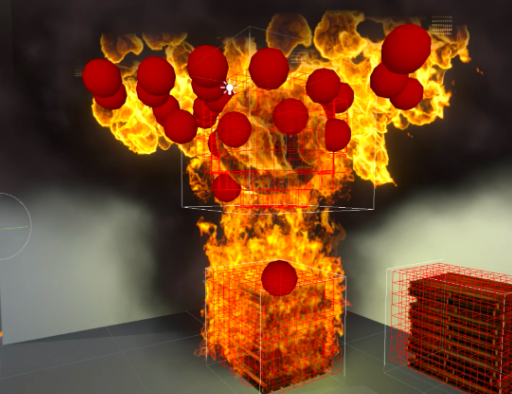
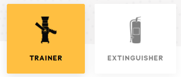
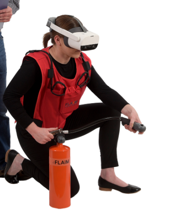
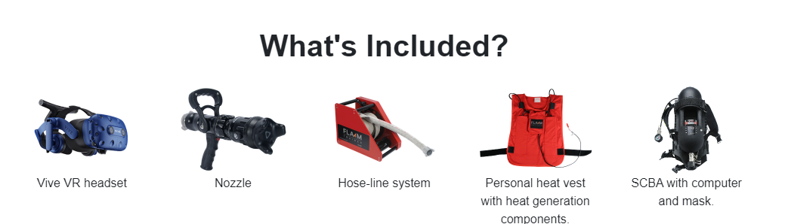

Overview
What is it?
FLAIM Trainer is a firefighter training simulator that utilizes a virtual reality
environment, haptic feedback, and custom equipment to provide a low-cost solution for
training in hazardous and emergency situations.
History
It is the result of over 10 years of research at Deakin University, Australia. The
models in FLAIM are intended to mimic a fire envionment as realistically as possible,
from the way that it reacts to the user to how it spreads and ignites on different
materials.

Use and application
FLAIM is being developed as a low*-cost alternative and supplement to live fire training. The
best suited applications are for scenarios that are too dangerous or expensive (or both) to
constantly enact in real life.
The Basics™
There are two types of FLAIM training equipment



The VR headset that is used. SteamVR is used to launch the
software.
On the tip of this Task Force Tip G-Force branch/nozzle is a
ViveTracker for motion tracking.
This mobile-hose line reel unit, along with the nozzle, is capable
of generating up to 300N (67.44 pounds) of force.
The heat suit contains heat generation components, haptic feedback,
and vitals measurement. It can generate heat up to 70°C (158°F).
The self-contained breathing apparatus (SCBA) is the same suit and
mask used by firefighters in real scenarios and is where the head mounted VR display is
incorporated.
Why is it unique and a good use of VR?
Dedicated live fire training grounds cost millions of dollars. For every one
firefighter, one hour is training is estimated to cost between $1000-$5000.
Resulting in firefighters getting less than one day of live training per
year.
In comparison, one hour of FLAIM Trainer training costs $16 if used consistently
over a 5 year period.
Weaknesses
As of 2018, the price is $30,000.
6.5/10 for simulation sickness - but for the right reasons. It's designed to be
somewhat nauseating in order to simulate a fire scenario.
Nothing beats a real fire.
Similar Applications
The Flyability drone is a Swiss made drone made for search and rescue missions and is equipped with
thermal cameras.
Darley Systems, who sells FLAIM in the United States, also utilizes drones equipped with cameras and
hoses to assist firefighters.
Potential Applications
- AR drone assistance in fire
- More development in the area of haptic feedback for a more realistic experience
- Training for other departments concerned with public safety (natural disasters)
Conclusion
VR in application to provide training for emergency situations has a lot of potential. It has a while to go before it's comparable with real scenarios, but FLAIM is already being used for training.
References
NFPA, Needs assessment of U.S. Fire Service. (2016) https://www.nfpa.org/News-and-Research/Data-research-and-tools/Emergency-Responders/Needs-assessment
FLAIM Trainer FAQ documents. https://flaimsystems.com/products/trainer
Zhuang, J., Payyappalli, V. M., Behrendt, A., & Lukasiewicz, K. (2017, October). Total Cost of Fire in the United States. Retrieved from https://www.nfpa.org/News-and-Research/Data-research-and-tools/US-Fire-Problem/Total-cost-of-fire-in-the-United-States